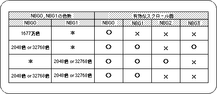

Return to previous page | Return to menu | Go to next page
Depending on the number of color settings of the normal scroll screen NBG0, NBG1, there may be restrictions on the number of scroll surfaces that can be output.
The following table summarizes this.

Note) * indicates selection of 256 colors or less.
Sega Saturn also has scroll restrictions due to VRAM access due to hardware performance.
This applies with a limit on the number of character colors on the normal scroll screen.
In particular, if you set the normal scroll surface to a reduced size or use a rotating scroll surface, you must be careful because the scroll surface that can be drawn is significantly restricted along with the number of character colors.
For details on access restrictions, refer to “HARDWARE MANUAL vol.2: VDP2 User's Manual”.